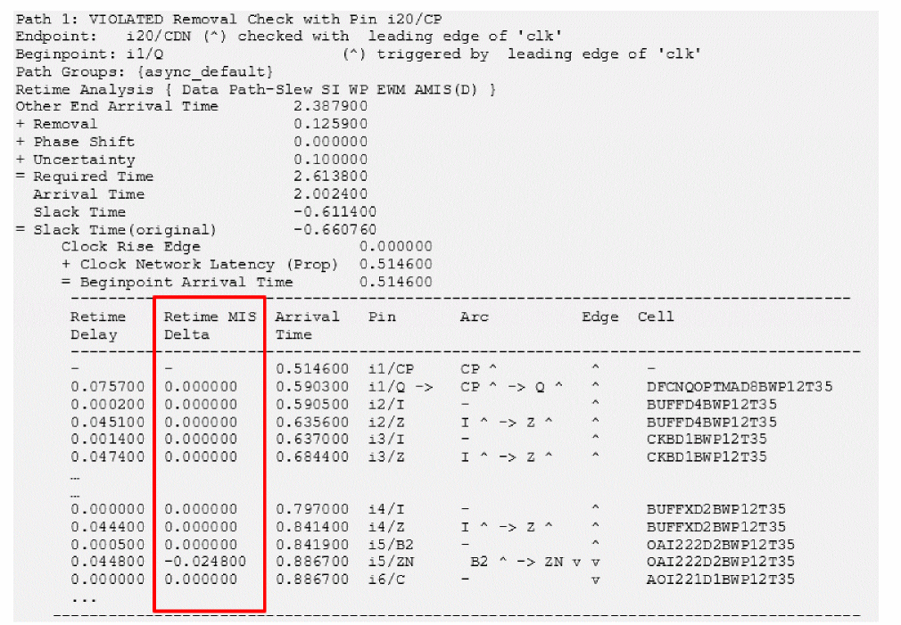

MIS Delta Delay Reporting
Tempus performs simulation-based delay calculation for MIS. Multiple input switching is modeled by presenting switching inputs with equivalent current sources. Due to the nature of analysis, Tempus does not have delays without MIS impact, and thus, cannot determine MIS delta delay.
You can report MIS delta delay in timing reports (report_timing command) using one of the following commands:
set timing_report_fields {retime}
report_timing -format {retime_mis_delta}
Figure -112 MIS delta delay report

You can query on retime MIS delta delay using the retime_mis_delta property on timing point object of PBA path.
set path_col [report_timing -early -net -collection -retime path_slew_propagation …]
foreach_in_collection each_tp [get_property $path_col timing_points] {
puts "[get_property $each_tp hierarchical_name] \
[get_property $each_tp retime_mis_delta]"
}
...
i5/B2 0.000000
i5/ZN -0.024800
i6/C 0.0000000
i6/ZN 0.012600
...
Return to top